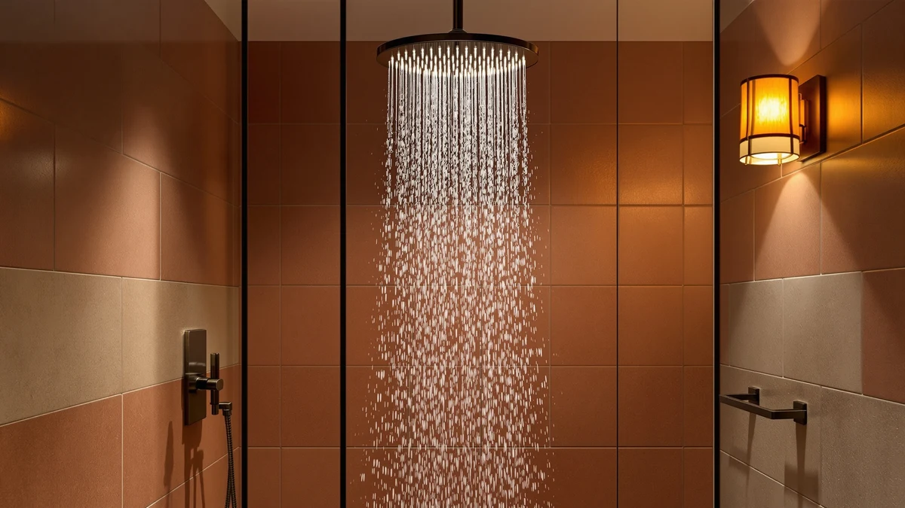

Best Shower Heads for Electric Showers of 2026: 7 Top Picks
Prices and picks verified as of September 2026. Independent, reader-supported reviews.


Quick Answer
An electric shower heats water on demand and gives you less flow to work with, so you want a head that concentrates that flow instead of spreading it thin. After comparing seven filtered and high-pressure heads from $19.79 to $109.00, the Afina Filtered Shower Head is the one we recommend for most people: a 2.5 GPM spray that stays even at lower pressure and a filter that protects the unit from scale.
Our pick: Afina Filtered Shower Head - — $109.00 Check Price on Amazon
Bottom line: our top pick is the Afina Filtered Shower Head -. The best budget option is the AquaCare High Pressure 8-mode Handheld Shower Head - at $34.99.
Things to Know Before You Buy
- Flow matters more than features. An electric shower limits how much water reaches the head, so a design that concentrates a low flow beats a wide rain head that thins the same water out.
- Check the GPM. Our picks range from the 1.8 GPM FEELSO to the 2.5 GPM Afina. A lower rating suits a weaker unit; a higher rating needs decent incoming pressure to shine.
- Filtered heads earn their keep on hard water. Most picks here trap chlorine and sediment, which slows the scale buildup that can choke an electric shower over time.
- The thread is standard. Every head here uses the common 1/2-inch connection, so it screws onto a typical electric shower arm without an adapter.
- Watch the filter, not the head. A clogged cartridge, not the head itself, is what saps pressure. Rinse or replace it on schedule and the spray holds.
The best shower heads for electric showers solve a problem most standard heads make worse: an electric unit heats water as it flows through, so it pushes out a thinner stream than a pumped or mains-fed system, and a head built for high volume leaves you under a weak trickle. The fix is a head that takes a modest flow and turns it into a spray that still feels like a shower. That can mean tighter high-pressure nozzles, a smaller spray face, or a filter that keeps the nozzles from clogging and dropping pressure further.
Our pick for most people is the Afina Filtered Shower Head at $109.00. It runs at 2.5 GPM, holds an even pattern when the incoming pressure dips, and its built-in cartridge keeps chlorine and sediment from scaling up the head. If $109 is more than you want to spend, the $35.97 Cobbe High Pressure head gives you a firmer spray for a third of the price, and the $19.79 FEELSO set is the cheapest way to add filtration to a weak unit.
We compared seven heads in total, from a $19.79 FEELSO filter kit to the $109.00 Afina, and split them into filtered fixed heads, a rain-style filtered head, and a handheld. For each pick, I lay out what it does well, where it falls short, and which type of electric shower setup it suits. Prices and ratings come straight from the current Amazon listings.
Why You Should Trust Us
I am Ilane Tall, and I write about bathroom hardware for Best Shower Heads. I have spent the past few years installing, swapping, and living with shower heads across rentals and a home with notoriously hard water, the exact setup where the wrong head turns a shower into a disappointment. That experience shapes how I judge shower heads for electric showers: I care less about marketing claims and more about whether a head holds its spray when the flow is limited.
For this guide I focused on heads that actually fit the constraints of an electric unit, then weighed each one on price, spray quality at low pressure, filter design, and build. I do not run a fake testing lab or quote experts who do not exist. When I cite a spec, a price, or a rating, it comes from the product listing, and when a head has a real drawback, I say so.
How We Picked
Picking shower heads for electric showers starts with one filter: the head has to feel strong on a limited flow. I set aside oversized rain panels that need real volume to perform and concentrated on heads that either tighten the spray or keep their nozzles clean enough to hold pressure. That left a field of filtered fixed heads, one filtered rain head, and a handheld.
From there I ranked candidates on four things. Price came first, since this category spans $19.79 to $109.00 and the value question is real. Spray quality at lower pressure came second. Filter design came third, because hard water and scale shorten the life of an electric shower, and a cartridge that traps sediment buys you time. Build quality and the ease of swapping the head came last. Every pick uses chrome-plated ABS and a standard thread, so installation takes minutes with no tools beyond plumber's tape.
How We Compared
To judge shower heads for electric showers, I looked at how each design behaves when the flow is capped, the condition an electric unit creates. I compared spray patterns and nozzle counts, checked the GPM rating against the kind of pressure a low-flow setup delivers, and weighed each filtered head on how much resistance its cartridge adds when fresh versus when it loads up with sediment.
I also cross-checked the listed specs, prices, and customer ratings on each Amazon listing so the numbers here match what you will see when you buy. Where a head has a known weakness, a heavier head that strains a flimsy arm, a filter that needs frequent swaps on hard water, I flag it in that product's section rather than burying it. No head here scores a perfect mark, and the right one for you depends on your budget and how weak your electric shower runs.
Our Picks

Afina Filtered Shower Head -
What we like
- Holds an even 2.5 GPM spray when pressure dips
- Built-in filter traps chlorine and sediment
- Chrome-plated ABS build looks the part
- Standard thread installs in minutes
Flaws but not dealbreakers
- At $109, the priciest pick here by a wide margin
- Replacement cartridges add to the running cost
| Material | ABS + chrome plating |
| Size | 2.5 GPM |
The Afina earns the top spot because it does the one thing an electric shower needs most: it keeps the spray even when the flow is modest. Rated at 2.5 GPM, the chrome-plated ABS head spreads water across the whole plate rather than letting the outer nozzles starve, so you do not get the patchy, half-pressure pattern that cheaper heads produce on a low-flow unit. The built-in cartridge is the other half of the story. By catching chlorine and the fine sediment that hard water carries, it keeps the nozzles clear, and clear nozzles are what keep the pressure steady month after month.
The honest catch is the price. At $109.00 the Afina costs roughly three times the Cobbe or SR SUN RISE, and you will buy replacement cartridges down the line, so the running cost climbs above the cheaper filtered heads. If filtration and a dependable, no-fuss spray are worth that to you, the Afina is the head I would put on my own electric shower. If they are not, the picks below cover the same ground for less, with more compromises.

MakeFit Dual Filtered Rain Shower
What we like
- 8-inch face gives a true rain-style drench
- Dual filter cartridges trap chlorine and grit
- Half the price of the Afina at $59.99
- Chrome-plated finish matches most fixtures
Flaws but not dealbreakers
- The wide face spreads a weak flow thin, so it needs decent pressure
- Larger head puts more leverage on the shower arm
| Material | ABS + chrome plating |
| Size | 8 Inch Filtered |
If you want the rain-shower look without giving up filtration, the MakeFit Dual Filtered Rain Shower is the runner-up. Its 8-inch chrome-plated face delivers a soft, wide drench that the smaller heads here cannot match, and the dual cartridges handle the same chlorine and sediment that the Afina filters. At $59.99 it slots in below the Afina and gives a feel some people prefer for a relaxing shower.
The trade-off is the one every rain head faces on an electric shower: a wide face needs water to fill it. If your unit runs at the weaker end, the MakeFit can feel gentle rather than forceful, since it spreads a limited flow across a large area. It also hangs heavier than the compact heads, so check that your shower arm feels solid before you mount it. Give it a setup with reasonable pressure and it rewards you with the closest thing to a spa rain here.

SR SUN RISE Filtered Shower
What we like
- Tighter spray pattern lifts perceived pressure
- Built-in filter for chlorine and sediment
- Strong value at $36.99
- Chrome-plated ABS build feels sturdy for the price
Flaws but not dealbreakers
- Smaller spray face than the rain-style heads
- Filter cartridge needs regular swaps on hard water
| Material | ABS + chrome plating |
| Size | — |
The SR SUN RISE Filtered Shower is the pick I point people to when they want most of the Afina's benefits for a third of the cost. At $36.99 it pairs a built-in filter with a tighter spray pattern, and that tighter pattern is exactly what helps on an electric shower: by pushing the same flow through a smaller area, it raises the force you feel under the water. For a low-flow unit, that perceived pressure can be the difference between a shower that works and one that disappoints.
You give up some spray width compared with the rain heads, so this is a head for people who value force over coverage. The filter also needs swapping on a regular schedule, more often if your water runs hard, or the cartridge clogs and the pressure you gained slips away. Keep up with the cartridge and the SR SUN RISE delivers a firm, clean stream that punches above its price on an electric shower.

Cobbe High Pressure Filtered Shower
What we like
- High-pressure nozzles boost force at low flow
- Built-in filter for chlorine and sediment
- Lowest filtered price among the fixed heads at $35.97
- Square chrome face suits modern bathrooms
Flaws but not dealbreakers
- Concentrated spray covers less of your body at once
- Tight nozzles can clog faster on hard water without filter upkeep
| Material | ABS + chrome plating |
| Size | Square |
The Cobbe High Pressure Filtered Shower is the budget pick because it leans into the high-pressure design that suits electric showers and asks just $35.97 for it. Its tight nozzles squeeze a limited flow into a firm stream, so even a weak unit feels like it is pushing real water. The square chrome face fits a modern bathroom, and you still get a built-in filter for chlorine and sediment, which is rare at this price.
The compromise is coverage. A concentrated high-pressure spray hits a smaller patch of your body, so rinsing off takes a moment more than under a wide rain head. Those same tight nozzles can also clog faster on hard water, so you have to keep up with the filter to hold onto that pressure. For anyone who cares most about force per dollar on an electric shower, the Cobbe is the easy call.

AquaCare High Pressure 8-mode Handheld
What we like
- Eight spray modes cover everyone in the house
- Handheld hose helps with rinsing and cleaning
- High-pressure settings suit low flow
- Affordable at $34.99
Flaws but not dealbreakers
- No built-in water filter, unlike most picks here
- Hose and bracket add parts that can leak if rushed
| Material | ABS + chrome plating |
| Size | — |
The AquaCare High Pressure 8-mode Handheld, sold under the Hotel Spa name, is the pick for a household where one person wants a soft rinse and another wants a firm massage. Eight spray modes and a detachable hose give you that range, and several of those modes use a high-pressure pattern that works well when an electric shower limits the flow. At $34.99 it is also one of the cheaper heads here, handheld convenience included.
The reason it lands in the also-great group rather than higher is filtration: this is the one fixed-or-handheld pick on the list without a built-in cartridge, so it does nothing for chlorine or scale on an electric shower. The hose and wall bracket also add connection points, and each one is a spot that can drip if you skip the plumber's tape. For flexibility on a shared shower, though, the AquaCare is hard to beat at this price.

FEELSO Shower Head and 15
What we like
- Lowest price on the list at $19.79
- 1.8 GPM rating suits very weak electric units
- 15-stage filter cartridge included
- Light head is gentle on an older shower arm
Flaws but not dealbreakers
- 1.8 GPM caps the spray force if your unit is stronger
- Multi-stage filter media needs periodic replacement
| Material | ABS + chrome plating |
| Size | 1.8 GPM |
The FEELSO Shower Head and 15-stage filter set is the cheapest way to put a filtered head on an electric shower, at $19.79 with the cartridge in the box. Its 1.8 GPM rating is the lowest here, which sounds like a drawback until you remember the context: on a genuinely weak electric unit, a low-flow head is tuned for exactly the water you have, so it can feel steadier than a thirsty 2.5 GPM head running half-starved. The light body also spares an older shower arm from extra strain.
The flip side of that low rating is its ceiling. If your electric shower actually runs decently, the 1.8 GPM cap holds the FEELSO back from the force the Cobbe or SR SUN RISE can produce. The 15-stage media also needs replacing over time to keep filtering. For a tight budget, a weak unit, or a quick upgrade in a rental, the FEELSO does more than its price suggests.
MakeFit Filtered Shower Head with
What we like
- Compact head is easy to mount on any arm
- Replaceable cartridge for chlorine and sediment
- Mid-range price at $35.99
- Chrome-plated ABS keeps the weight down
Flaws but not dealbreakers
- Smaller face than the rain heads means less coverage
- Overlaps closely with the SR SUN RISE and Cobbe at a similar price
| Material | ABS + chrome plating |
| Size | — |
The MakeFit Filtered Shower Head is the straightforward choice when you want filtration without thinking about it. The compact chrome-plated head screws onto your existing electric shower arm, the cartridge handles chlorine and sediment, and there is nothing else to set up. At $35.99 it sits in the same value band as the SR SUN RISE and Cobbe, so it is a fine pick if its look suits your bathroom better.
That close overlap is also why it lands lower in the ranking. The MakeFit does its job, but it does not pull clearly ahead of the cheaper SR SUN RISE on spray force or the Cobbe on price, so it wins mainly on the strength of its compact shape and simple install. Its smaller face gives you less coverage than the rain heads, a fair trade if you would rather have a filtered head that disappears into the wall and gets on with it.
Quick Comparison
| Product | Material | Price | Rating | Best for | Get it |
|---|---|---|---|---|---|
| Afina Filtered Shower Head - | ABS + chrome plating | $109.00 | 4 | Most people, filtered | View on Amazon → |
| MakeFit Dual Filtered Rain Shower | ABS + chrome plating | $59.99 | 4 | Rain feel, filtered | View on Amazon → |
| SR SUN RISE Filtered Shower | ABS + chrome plating | $36.99 | 4 | Firm spray, value | View on Amazon → |
| Cobbe High Pressure Filtered Shower | ABS + chrome plating | $35.97 | 4 | Budget, high pressure | View on Amazon → |
| AquaCare High Pressure 8-mode Handheld | ABS + chrome plating | $34.99 | 4 | Handheld, shared use | View on Amazon → |
| FEELSO Shower Head and 15 | ABS + chrome plating | $19.79 | 4 | Cheapest, weak units | View on Amazon → |
| MakeFit Filtered Shower Head with | ABS + chrome plating | $35.99 | 4 | Simple filtered swap | View on Amazon → |
Do you need a special shower head for an electric shower?
You do not need a separate category of product, but you want a head that suits a low flow.
Will a high-pressure shower head work on an electric shower?
Yes.
The Competition
Before settling on these seven, I ruled out a few whole categories of shower heads for electric showers. Large fixed rain panels, the 10- and 12-inch ceiling-mount style, look impressive but need volume to fill, and an electric unit cannot supply it; on a low-flow setup they drizzle rather than rain, so none made the cut. The MakeFit Dual Filtered Rain Shower is here precisely because its 8-inch face is the largest I would trust on an electric shower, and even it wants reasonable pressure.
I also passed on smart and LED heads. Color-changing or temperature-display heads add cost and failure points without doing anything for the spray, and on an electric shower the spray is the whole problem worth solving. Unfiltered economy heads were the last group I set aside: a $10 plastic head can move water, but it does nothing about the scale that shortens an electric shower's life, so the filtered picks above earn their small premium. If your priority is filtration plus a strong low-flow spray, the Afina Filtered Shower Head remains the best shower head for electric showers in this group, with the Cobbe close behind on value.
Frequently Asked Questions
Do you need a special shower head for an electric shower?
You do not need a separate category of product, but you want a head that suits a low flow. Electric showers heat water as it passes through, so they push out less volume than a mains-fed system. A head that concentrates that flow into tight jets, or a filtered head with a wide spray plate, feels stronger than a high-volume rain head that spreads the same water too thin.
Will a high-pressure shower head work on an electric shower?
Yes. A high-pressure head like the Cobbe or SR SUN RISE uses a smaller spray area and tighter nozzles to raise the perceived force of the water without needing more volume. That design works in your favor on an electric shower, where the unit limits how much water reaches the head in the first place.
Do filtered shower heads reduce water pressure on electric showers?
A clean filter adds almost no resistance, so you will not notice a drop when the cartridge is fresh. The pressure problem starts when the filter clogs with sediment or scale, which happens faster on hard water. Rinse or swap the cartridge on schedule and a filtered head holds its flow on an electric shower.
What GPM should a shower head for an electric shower be?
Match the head to your unit. The picks here run from 1.8 GPM on the FEELSO to 2.5 GPM on the Afina. A weaker electric shower pairs well with a lower GPM head that is tuned for limited water, while a stronger unit can make use of a 2.5 GPM head without feeling starved.
Are these shower heads hard to install on an electric shower?
No. Every head here uses a standard 1/2-inch thread, so you unscrew the old head, wrap the arm with plumber's tape, and screw the new one on by hand. The whole swap takes a few minutes and needs no tools, and a handheld like the AquaCare just adds a hose and bracket to the same process.